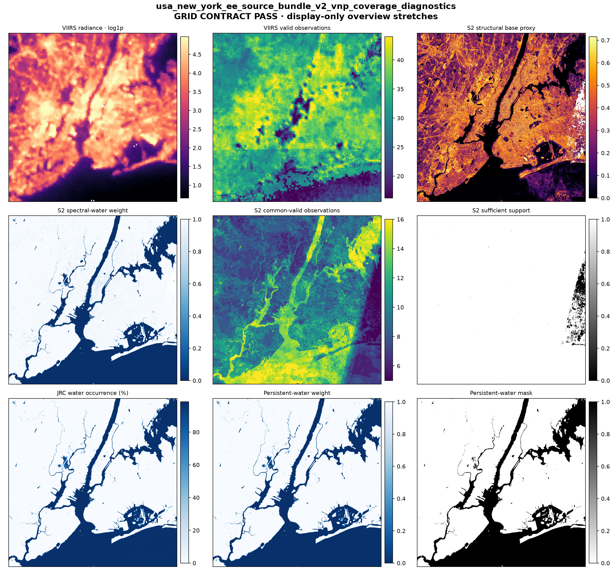
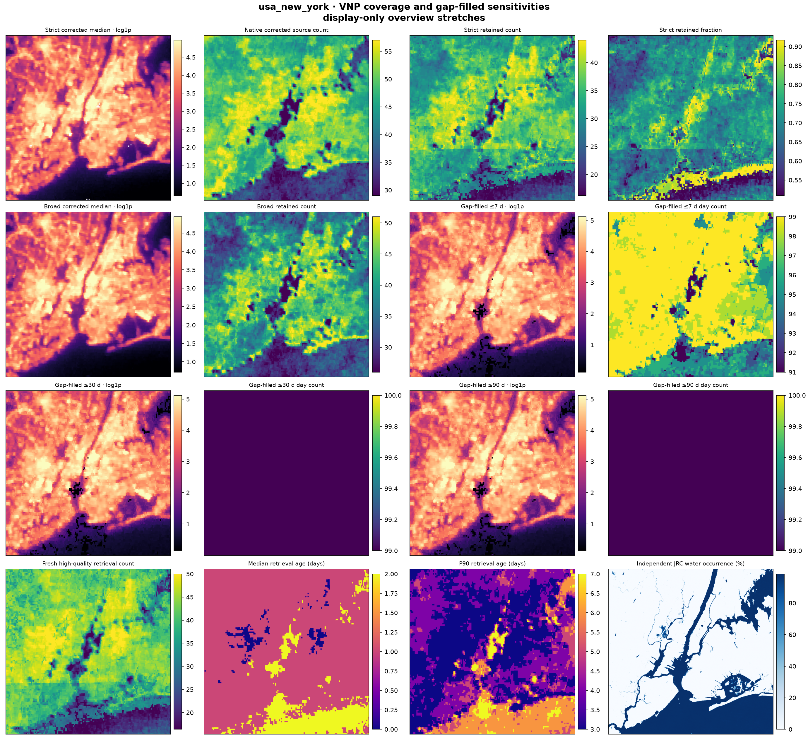
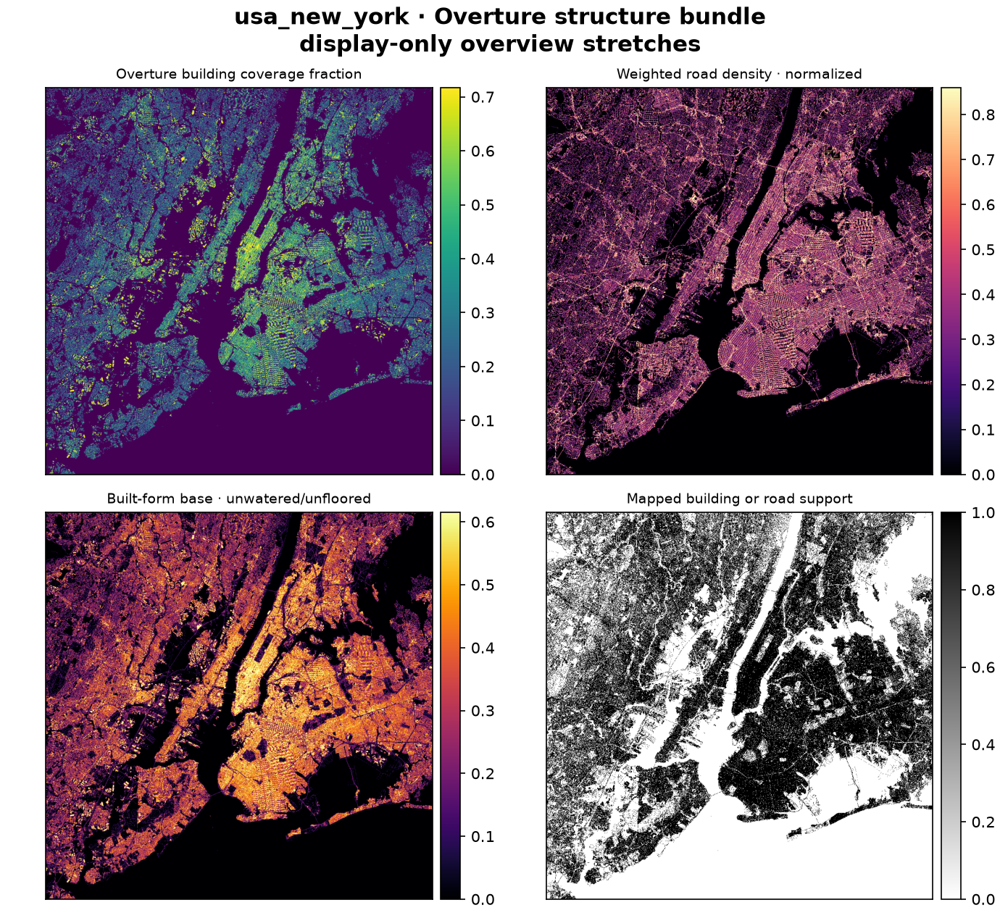
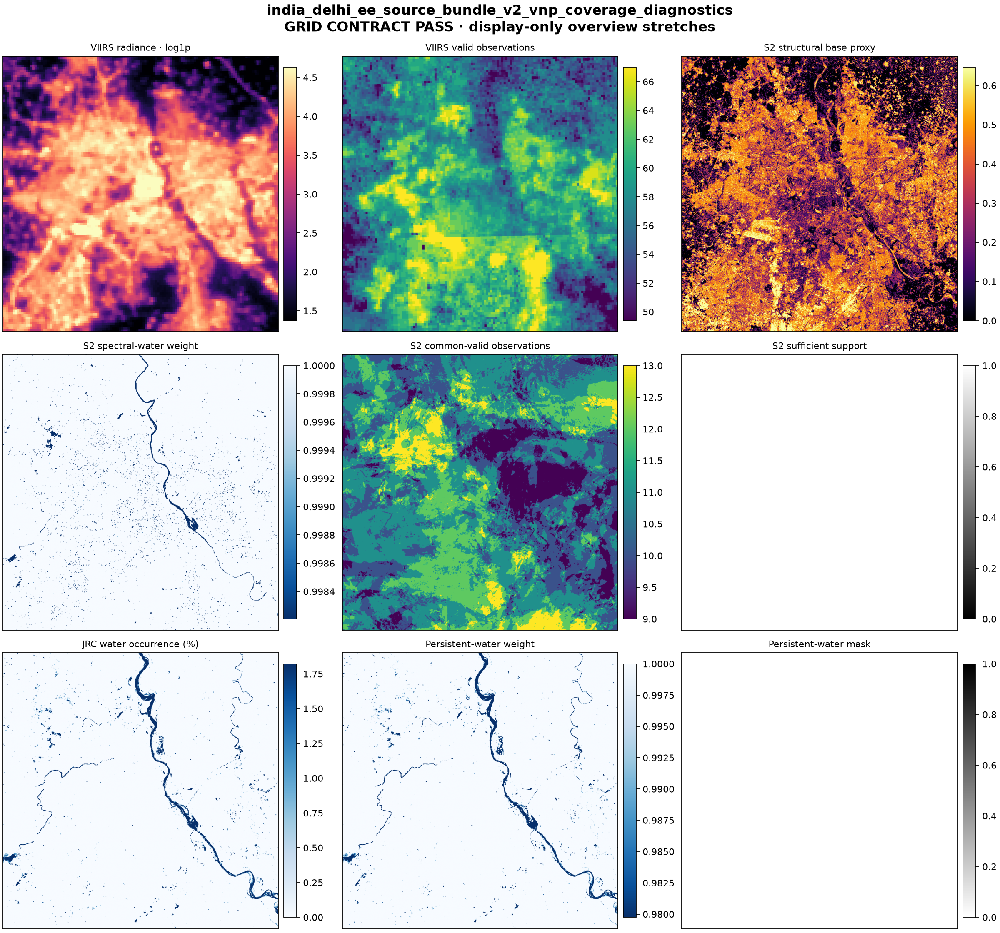
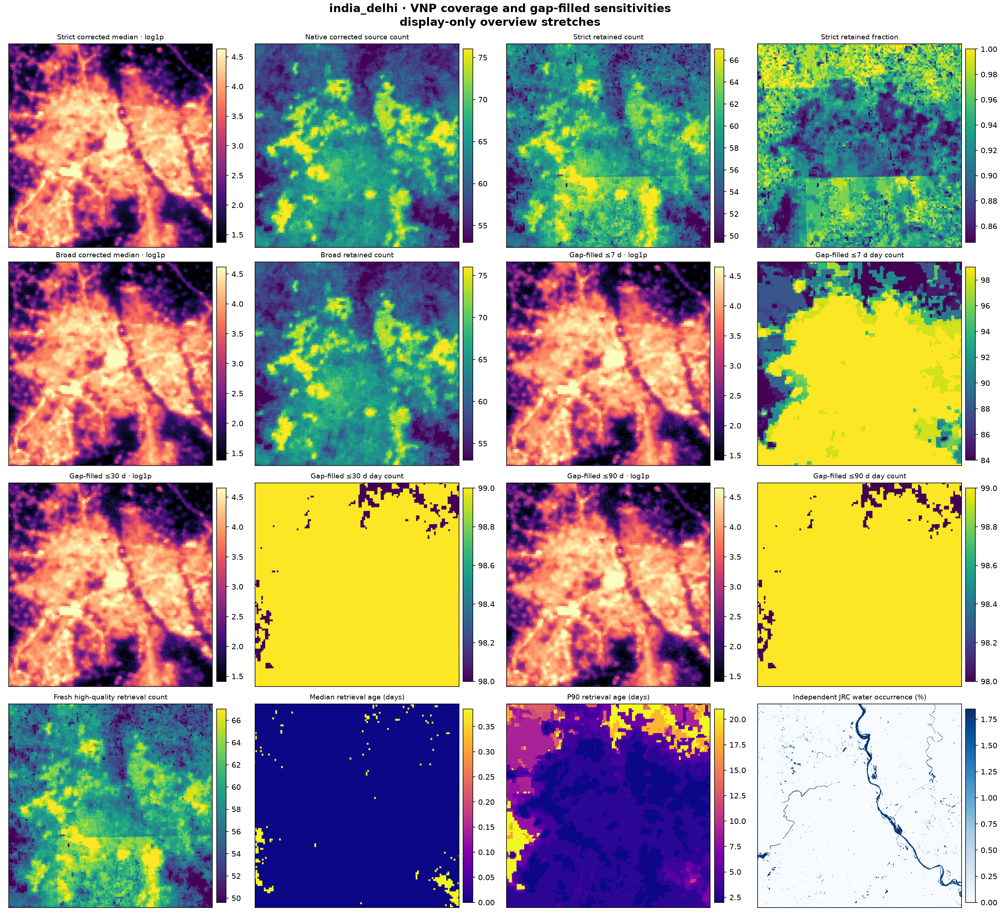
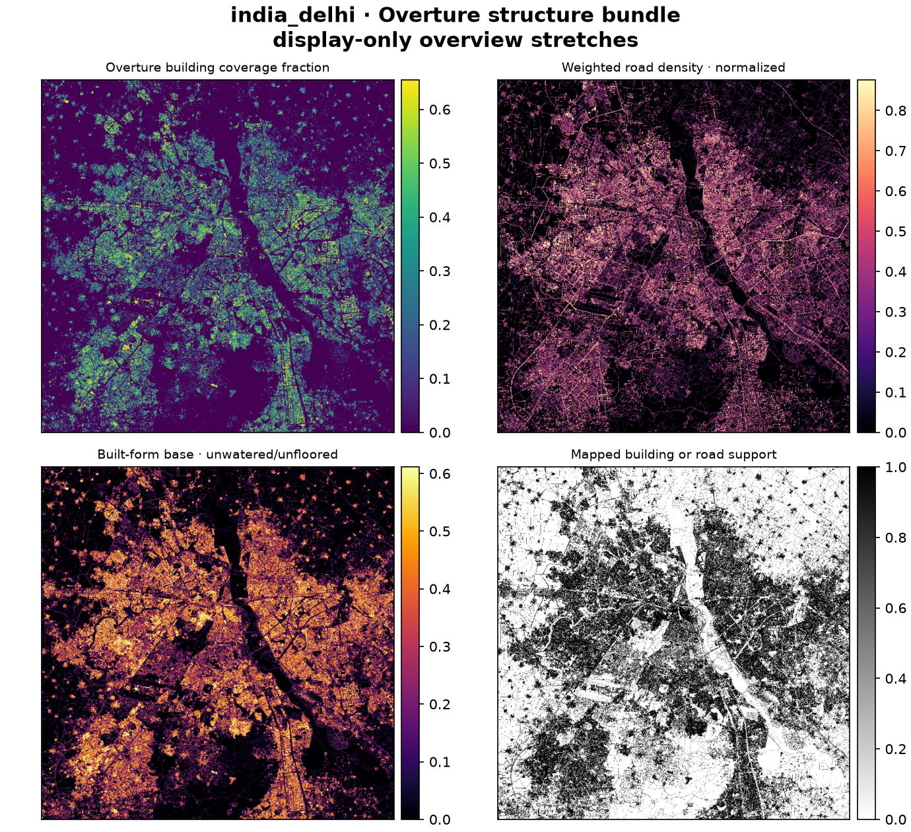

usa_new_york · grid PASS



india_delhi · grid PASS



Display overviews use average or nearest-neighbor resampling and percentile stretches only for visualization. They do not modify the source rasters. A grid failure quarantines that source from the allocation operator.





